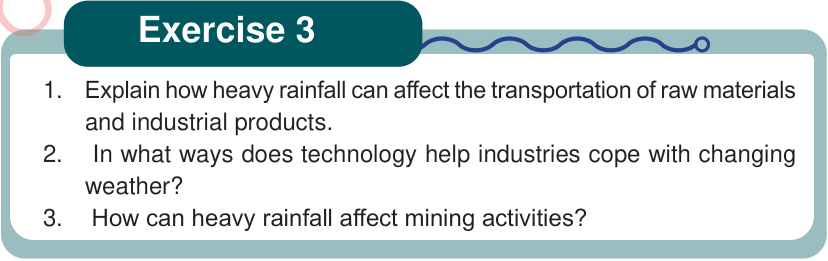

Exercise 3
1. Explain how heavy rainfall can affect the transportation of raw materials and industrial products.
2. In what ways does technology help industries cope with changing weather?
3. How can heavy rainfall affect mining activities?